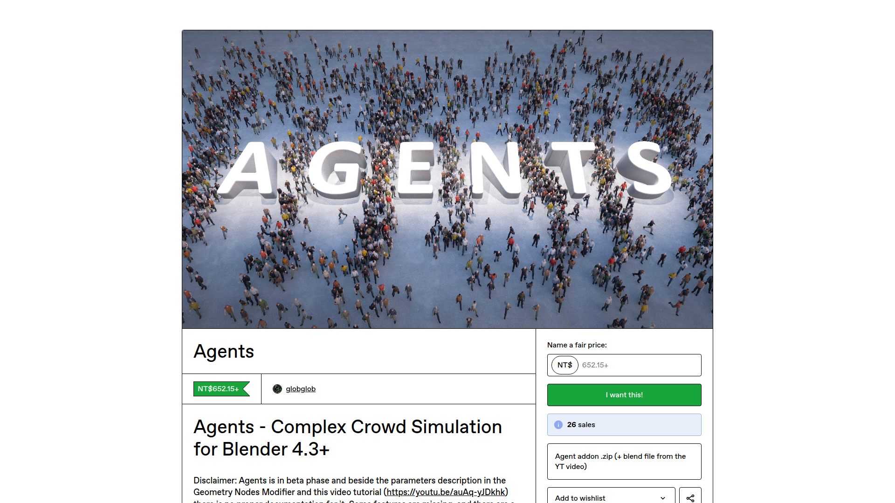

Agents 是一個完全以 Geometry Nodes 構建的 Blender 群眾模擬外掛，由獨立開發者 globglob3D 開發。它是第一個在 Geometry Nodes 中實現真正代理式模擬的工具，包含動畫狀態系統、個體路徑規劃和代理間碰撞迴避。目前處於 Beta 階段。
解決的問題：

Blender Conference — 群眾模擬展示
| 系統 | 說明 |
|---|---|
| Animation State System | 動畫狀態機，克服 Geometry Nodes 目前的限制實現狀態切換 |
| Individual Pathfinding | 每個代理獨立路徑規劃 |
| Agent-to-Agent Collision Avoidance | 代理之間的碰撞迴避 |
| 工具類型 | 代表 | 行為複雜度 |
|---|---|---|
| 場景填充器 | Procedural Crowds、Horde | 簡單（原地動畫、沿路徑移動） |
| 代理式模擬 | Agents、CrowdSim3D | 複雜（AI 邏輯、碰撞迴避、路徑規劃） |
| 主題 | 連結 |
|---|---|
| 開發教學影片（含功能展示 + 開發過程） | 由作者在 Blender Artists 發佈（見論壇帖） |
| Gumroad 產品頁 | https://globglob.gumroad.com/l/agents_crowd_simulation |
| 項目 | 價格 |
|---|---|
| Agents Beta | €18 EUR（約 $20 USD） |
限制： Beta 階段不建議用於正式產出，建議作為評估/原型用途。